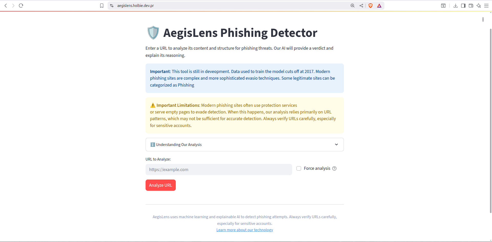

AegisLens provides explainable AI for cybersecurity, showing you WHY a URL is classified as malicious or safe. [cite: 34]
Try the Live Demo[cite_start]Many security tools act like "black boxes," giving a verdict without an explanation. [cite: 31] [cite_start]AegisLens was created to solve this "trust gap" by offering true transparency. [cite: 34] [cite_start]We use SHAP (SHapley Additive exPlanations) to generate visual force plots that explain every model decision, fostering user trust through transparency. [cite: 35]
Achieved ~70% detection for protected phishing sites via advanced URL pattern analysis. [cite: 46]
A transparent, four-tier risk communication system builds user confidence. [cite: 48]
Average analysis completes in just 3-5 seconds. [cite: 49]
See AegisLens in action. The application is deployed and ready to analyze URLs.
 Analyze a URL Now